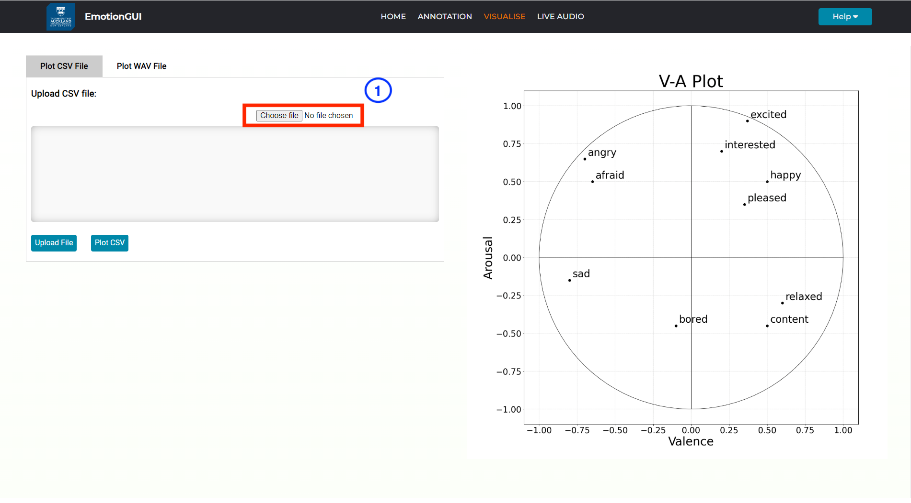
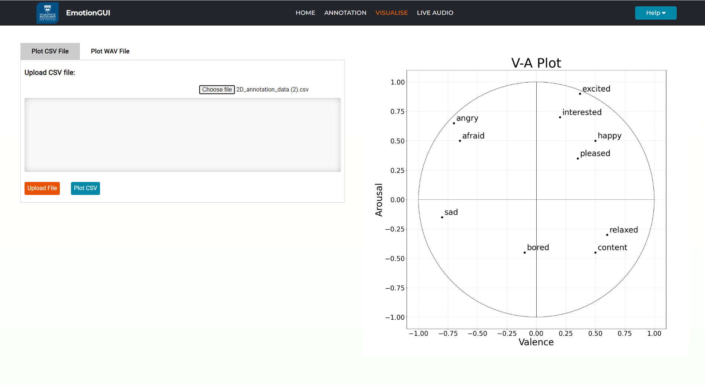
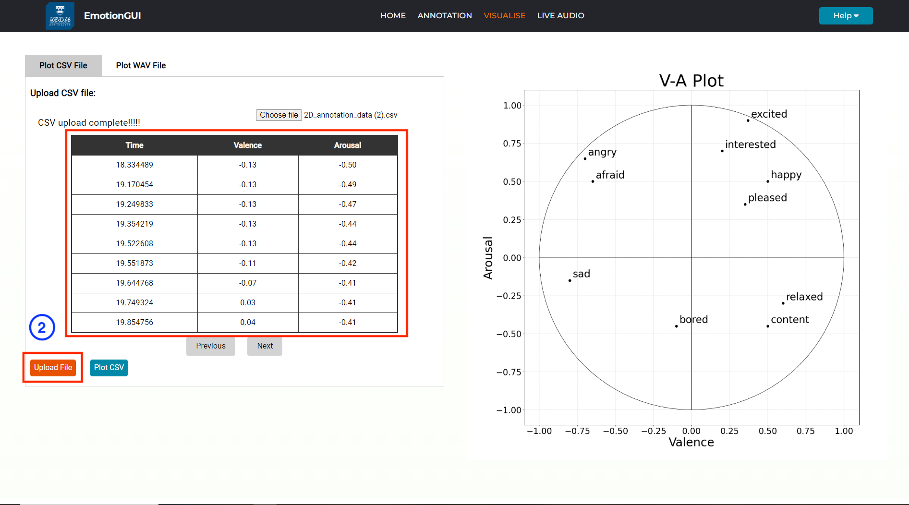
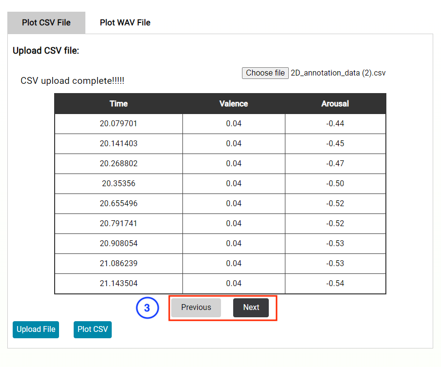
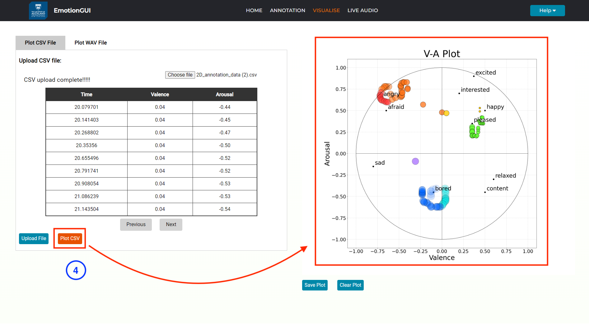
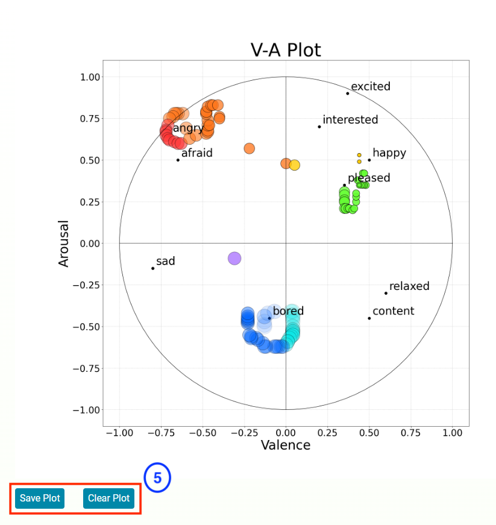

<!DOCTYPE html>
<html>
    <head>
        <title>About EmotionGUI Visualise Page</title>
    </head>
    <script src="https://kit.fontawesome.com/a076d05399.js" crossorigin="anonymous"></script>
    <link href="aboutStyle.css" rel="stylesheet" type="text/css" />
    </html>
    <body>
    <div class="about_container">
        <h3>Instructions for Speech Emotion Visualisation</h3>
        <hr style="height: 2px; background-color:rgb(72, 70, 70);">

        <h4> Welcome to the Visualise webpage!</h4>
        <p> Here, you can visulaise and plot speech emotion data that have been encoded as csv and wav files.<br>
         Curently the WAV model plotting functionality is undergoing development.
        </p>
        <p style="font-weight: bold;">Enjoy visualising your CSV and WAV files with ease!</p>
        <p> 1. First select a csv file from your local drive.</p>
        
        <br>
        <hr style="height: 1px; background-color:rgb(72, 70, 70);">
        
        <!--  -->
        <p> 2. Then by uploading the file on to the webpage you can visualise the csv data ona table.</p>
        
        <br>
        <hr style="height: 1px; background-color:rgb(72, 70, 70);">
        <p> 3. To explore the whole csv file use the previous and next buttons. </p>
        
        <br>
        <hr style="height: 1px; background-color:rgb(72, 70, 70);">
        <p> 4. By selecting the 'Plot CSV' button you can now visualise the csv data on the VA plot.</p>
        
        <br>
        <hr style="height: 1px; background-color:rgb(72, 70, 70);">
        <p> 5. You can also save the plot using the 'Save Plot' button. This will download the VA plot onto your local storage drive.</p>
        <p>   And to visualise a different CSV file you can simply select the 'Clear Plot' button and upload and plot the new csv file.</p>
        
        <br>
        <hr style="height: 1px; background-color:rgb(72, 70, 70);">
        
      
    </div>
</body>

